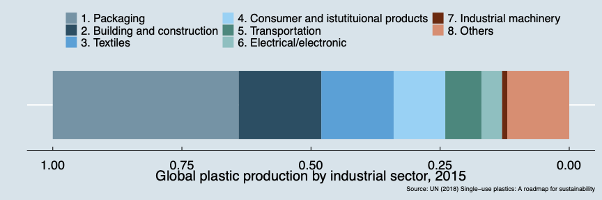

Waste Plastic Problem: there are many things we can do now
04/01 2022
Author: Eiji Hosoda
The issue of plastic waste has been the subject of much debate recently. The problem of waste plastic in the ocean is particularly serious. Many of you may have been shocked to see a video of a sea turtle with a plastic straw stuck in its nose. The amount of plastic produced in the world every year is about 500 million tons, 40% of which is for single use. If discarded plastic products are not collected, they leak into the natural environment. Some estimates suggest that by 2050, the weight of waste plastic in the ocean will exceed the total weight of fish.

Even more serious is waste plastic called microplastics, which is less than five millimeters in diameter. Microplastics, which absorb harmful substances, are being ingested by many fish and shellfish. Nano plastics, which are smaller than 1/10,000 of a millimeter in diameter, can even pass through cell membranes. The effects of these micro- and nano-plastics on the human body are still unknown, but many researchers warn that we need to be vigilant about their likely harms on human health.
So what can we do about this problem?
Some countries in Europe and Africa are banning plastic one-way bags, containers and cutlery (knives and forks). There are also strong calls to reduce the use of plastic products in general.
Of course, it is important to use resources carefully for the sake of future generations, and it is necessary to reduce the use of products that are difficult to dispose of. Plastic products are convenient when they are in use, but it is difficult to dispose of them afterwards. Successful recycling is possible only when waste plastics are collected and transported in a proper way. This is why it is necessary to take measures to reduce the use of one-way plastic products.
However, we need to think about this more calmly. No matter how much people in developed countries reduce their use of one-way plastics, they may not be able to do much to reduce ocean plastic waste.
According to some estimates, half of all ocean waste plastic comes from China and five other developing Asian countries. When it comes to addressing the problem of marine waste plastic, the fastest way to do so would be to establish a proper collection and transportation system for waste plastic in developing countries such as Asia.
However, this does not mean that developed countries should do nothing. The first priority should be to reduce the generation of waste plastic. We can do this immediately, for example, by charging for plastic bags and reducing the use of one-way plastics.
Then, we must collect waste plastic so that it does not leak into the natural environment. The informal export of waste plastic overseas should also be banned immediately. There are many things we can do right now.